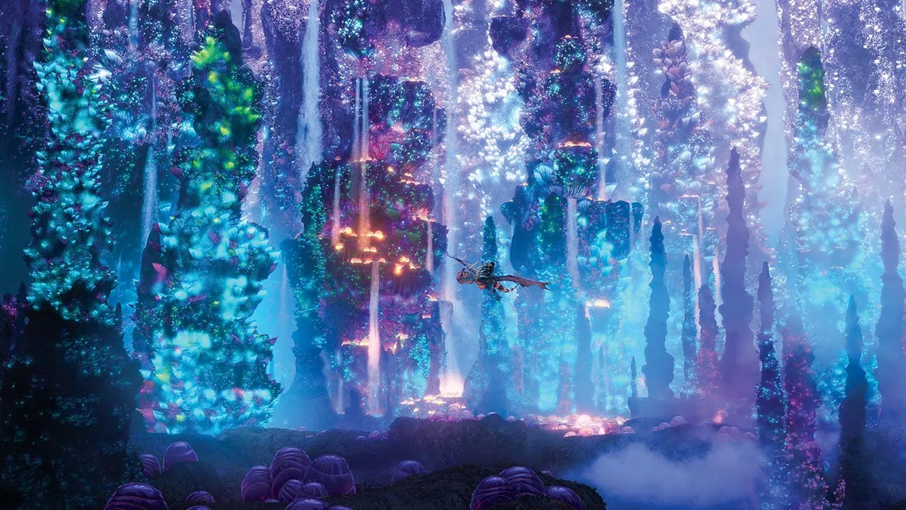
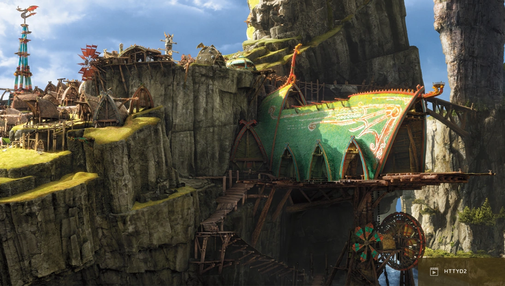

Toothless would absolutely love visiting the Hidden World for a vacation. It’s the ultimate dragon paradise, filled with shimmering bioluminescent plants that light up the entire cave system like a magical sky. There’s endless space for him to fly, soar, and twist through the glowing air. With so many other dragons around, Toothless would never run out of company or adventure, making it a peaceful and breathtaking place for him and the Light Fury to relax together.
Dragon’s Edge would be another exciting spot for Toothless. This rugged island is packed with cliffs perfect for high-speed dives and volcanic vents that create warm, comfortable resting spots. Since it’s isolated and wild, Toothless can explore freely without worrying about crowds of humans. It’s the ideal mix of adventure and relaxation, offering new places to discover with Hiccup by his side.

Berk, especially in the summer, would be a comforting vacation choice for Toothless. Winter on Berk is icy and harsh, but summer brings warm days, open skies, and oceans full of fish. Here, Toothless can spend time with Hiccup and the gang, soar over the village, nap on sunny rocks, and enjoy his favorite fishing spots. It’s his home, and sometimes the best vacations are simply returning to the place that feels familiar and full of friends..